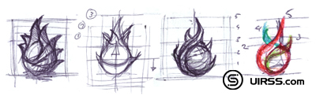
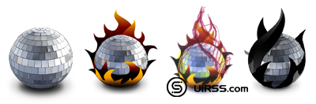
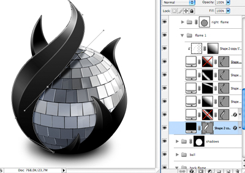
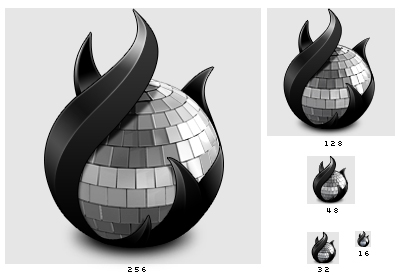

This summer when Austin and I started talking about Disco, Disco was just a Disc Copy application, hence the name. Born out of the wish to create an app that made some burning tasks easier, Disco soon became more the just some app that could copy discs.
I always had the hope that the name "Disco" would be an internal work name. But as the project came along we all realized the strength of the name. Especially in light of the effort we made to make the app "fun" to use. But he prospect of having to create an icon for an app with that particular name wasn't going to be very easy.
Obviously the corny stuff like just a disco ball, colored lights, just about the whole Saturday Night Fever prop department passed our thoughts. At some point we thought about changing the name to something simple and descriptive such as Inferno, AfterBurn and what not to make it easier to create a visual identity. But instead of making it easier on me, that side track only made it harder to create something interesting and unique. With all respect, making yet another "disc with fire" icon wasn't going to be a real challenge.
Clearly, choosing a name for your project isn't easy. I think many developers underestimate the importance of choosing a good name for an application. There are many things to keep in mind, such as choosing something that is not yet in use, or choosing something that is copyright- or trademark-able. Choosing a name that is catchy and sticks to your mind, or one that is completely unused and very descriptive is hard. A combination is obviously best, but certainly not easy.
Back to the icon. So as is clear by the above I did not want to create the obvious for the stated reasons. Disco is not an average app, so we didn't want an average or corny icon. Which left me with quite a challenge.
Early on, even while we where researching and deciding on the final name, I sketched down a version that combined both the name and the functionality. Normally I would only focus on conveying the functionality, but as pointed out earlier I wasn't convinced that would result in something that would embody what Disco stands for.
So a disco ball with flames it was. I asked, my good friend and colleague at Madebysofa Hugo van Heuven, to create a 3d model of a disco ball for me as a starting point for the icon. He created an amazing photorealistic model and rendered over 10 differently lighted versions that we then combined in photoshop to create the basis of what was going to be the Disco icon.
3 months later, on a trip in France, I finally sat down to work on the final look of the icon. I had been doing a lot of research into how to approach the flames, and initially I wanted to do realistic flames, but for some reason that didn't feel good. It was too easy. I also spent a lot of time sketching out the directions of the flames, I wanted the flames to be very vivid and alive as if they where trying to grab the ball. I worked 2 days on getting the flame shapes to look like I wanted them to, when finally deciding the 3 flame was simply best.
Because I didn't want to create realistic red/orange/yellow flames, I already decided that the flames where going to be look like plastic, partially inspired by the Speed Download icon. I found myself choosing between a dark blood red color or just going with the black I used to set up the flames with. And I think looking back, choosing for the black flames fits best with the whole black/white theme of the application.
So there you have it. A very butchy dark rock and roll icon if I may say so. An icon that, even when used small, stays remarkably easy to recognize. And best of all, because it's such a simple and intricate (read unique) shape it was very easy to create a 2 color logo version for the website and print materials. I especially like how the basic shapes could just as well have been a disc with fire. It's funny to see how an object shape can be filled up with something that is entirely different from what one would expect.
The icon is just one piece of the puzzle. It's one very important part of the over all branding that makes Disco so unique. If you want to make a difference in the Mac software scene these days, focusing only on complying to interface guidelines and feature sets will no longer cut it. We are certainly not advocating the creation of applications that lack in functionality but look beautiful, creating an app that has great functionality is and should always be step one. With Disco, we tried very hard to make the application as simple to use as possible while adding tons of new and existing features under the hood. For some further reading, I'd suggest that you check out Jason Harris's post on balancing UI and features, available at MyDreamApp.com.
Edit: Some people have asked asked me why the icon "is so small", well the icon isn't. It uses the same canvas size as any other icon. It's just that compared to a circle or a rectangle the Disco icon will "seem" small. You can read more about this subject in my blog post about the creation of the Camino icon.